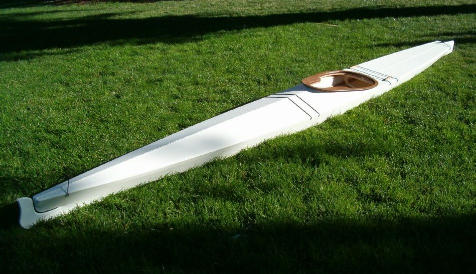

| Roldarka by David Gentry (US) | Menu Previous Page Next Page |
|

Dave, from Bellingham, Washington has completed a Roldarka single-chine Baidarka. The skin is 9oz polyester finished in white oil-based paint.
Dave reports that the kayak is stable, carves turns quickly, and is easy to roll.
|
|